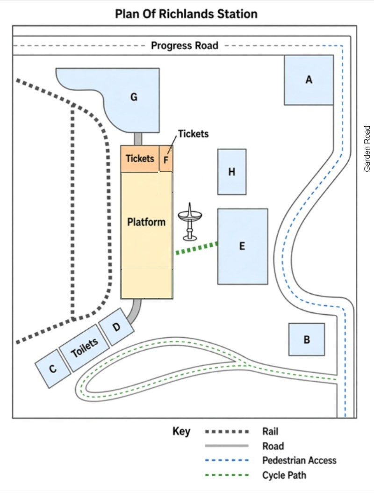

IELTS Listening Mock Test 02
40 questions · 4 parts · approximately 30 minutes
Unofficial practice material. This is not an official IELTS test and is not endorsed by IELTS.
Choose how to practise
Use headphones and adjust your volume before starting.
Section 1 · Questions 1–10
Questions 1–6
Complete the table below.
Write ONE WORD AND/OR A NUMBER for each answer.
LOCAL WALKS
| Village Walk | McGrady Falls Trail | Coal Mine Walk | |
|---|---|---|---|
| Length | 6 km | 12 km | 13.5 km |
| Level of difficulty | easy | easy | |
| Attractions | the (centrally located) a with a good view | a below the falls lots of | signs about the of the mine |
Questions 7–10
Complete the notes below.
Write ONE WORD AND/OR A NUMBER for each answer.
McGRADY FALLS TRAIL
Section 2 · Questions 11–20
Questions 11–15
Which change is proposed for each of the following problem areas?
Choose FIVE answers from the box and write the correct letter, A–G, next to Questions 11–15.
Problem areas
Questions 16–20
Label the map below.
Choose the correct letter, A–H, next to Questions 16–20.
RICHLANDS STATION

Section 3 · Questions 21–30
RESEARCH ON ABSENCE FROM WORK
Questions 21–24
Choose the correct letter, A, B or C.
Questions 25 and 26
Choose TWO letters, A–E.
Which TWO recommendations does the tutor make about Laura’s questionnaire?
0 of 2 selected.
Questions 27 and 28
Choose TWO letters, A–E.
Which TWO things will Laura explain in her covering letter to participants?
0 of 2 selected.
Questions 29 and 30
Choose TWO letters, A–E.
Which TWO activities does Laura already have definite dates for?
0 of 2 selected.
Section 4 · Questions 31–40
Questions 31–40
Complete the notes below.
Write ONE WORD ONLY for each answer.
THE MUSIC OF SALVATORE SCIARRINO
Biographical details
• He was born in Palermo in 1947.
• He moved to Rome in 1969 and took a course in electronic music, which influenced his style as a composer.
Work
• In the 1970s he composed a lot of music and taught until 1982.
Musical characteristics
Concert piece
• for piano, chorus and orchestra
• very difficult to play